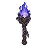

ภูตแสงม่วง
มอนธาตุวิญญาณ Lv 86–94
เจอที่
| แมพ | โซน | Lv | ภูมิภาค |
|---|---|---|---|
| ป่ารากดำ | 86–92 | ป่ากองไฟ | |
| ป่ารากดำ | ซุ้มรากดำ | 92–94 | ป่ากองไฟ |
| ขอบป่าต้นไม้มืด | 86–92 | ป่ากองไฟ | |
| ขอบป่าต้นไม้มืด | รากยักษ์ขอบป่า | 92–94 | ป่ากองไฟ |
ค่าสถานะตามเลเวล
| Lv | HP | ATK | DEF | MDEF | EXP | Job |
|---|---|---|---|---|---|---|
| 86 | 56,433 | 181–272 | 21 | 18 | 101 | 76 |
| 90 | 64,563 | 192–288 | 22 | 19 | 105 | 79 |
| 94 | 72,602 | 207–310 | 23 | 20 | 110 | 83 |
ตีด้วยธาตุไหนดี
แรงขึ้น: วิญญาณ ×1.25
เบาลง: ไม่มีธาตุ ×0.25
วัตถุดิบที่ดรอป
| ของ | โอกาส | |
|---|---|---|
| ถ่านภูตม่วง | 55% | 1 ชิ้น (15% ได้ 2) |
อุปกรณ์ที่ดรอป (1)
| ของ | โอกาส |
|---|---|
 คบเพลิงภูตแสงม่วง | 0.25% |
สกิล
วาร์ป (Lv 25+) · วาร์ป (Lv 60+) · ม่านเวท (Lv 60+)